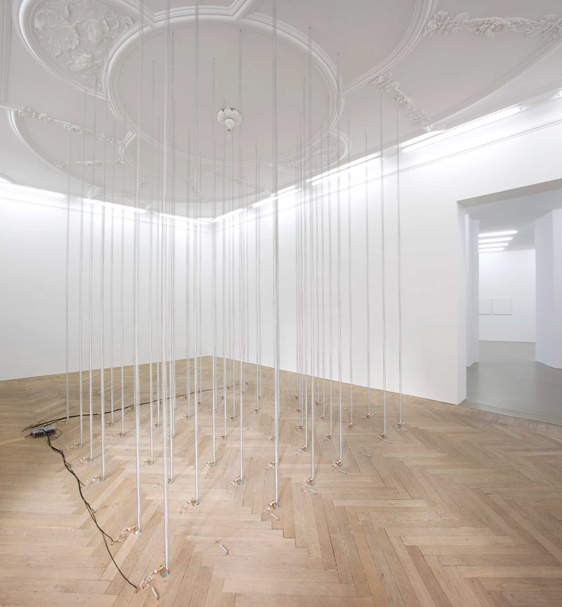
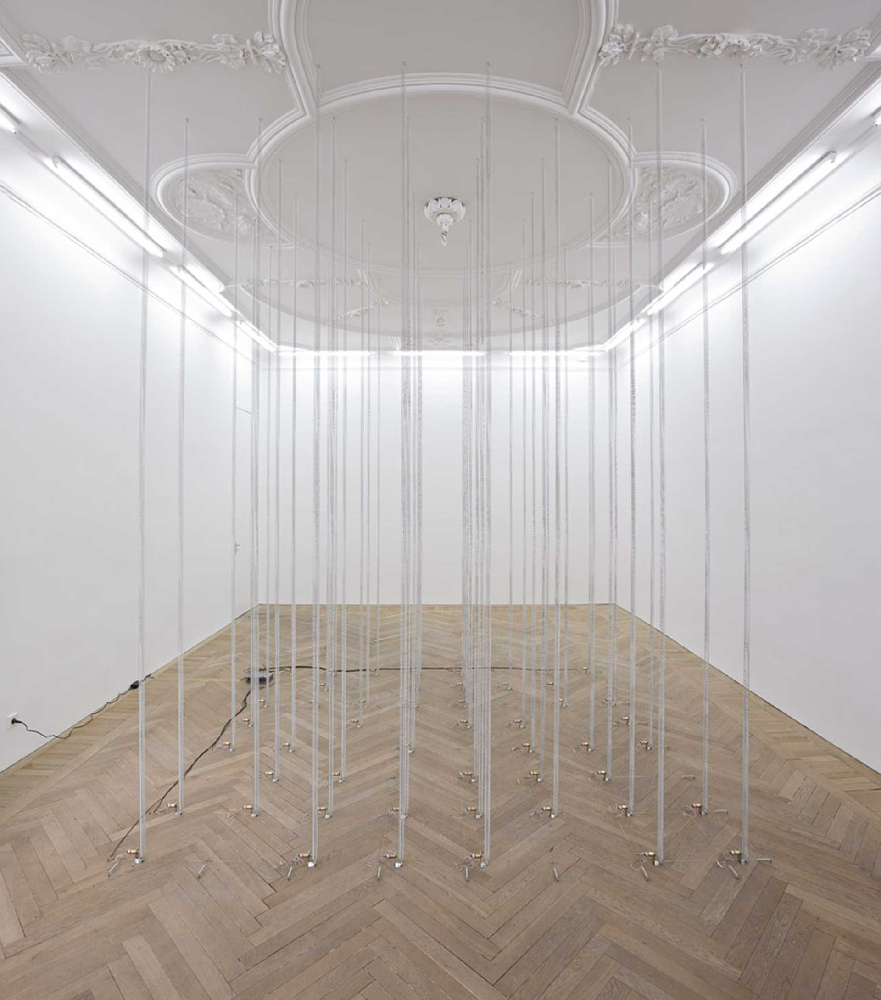
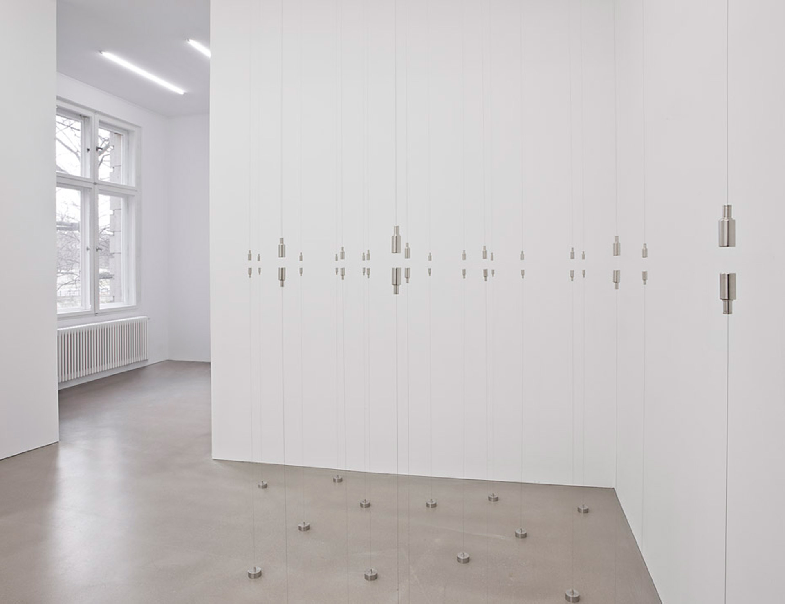
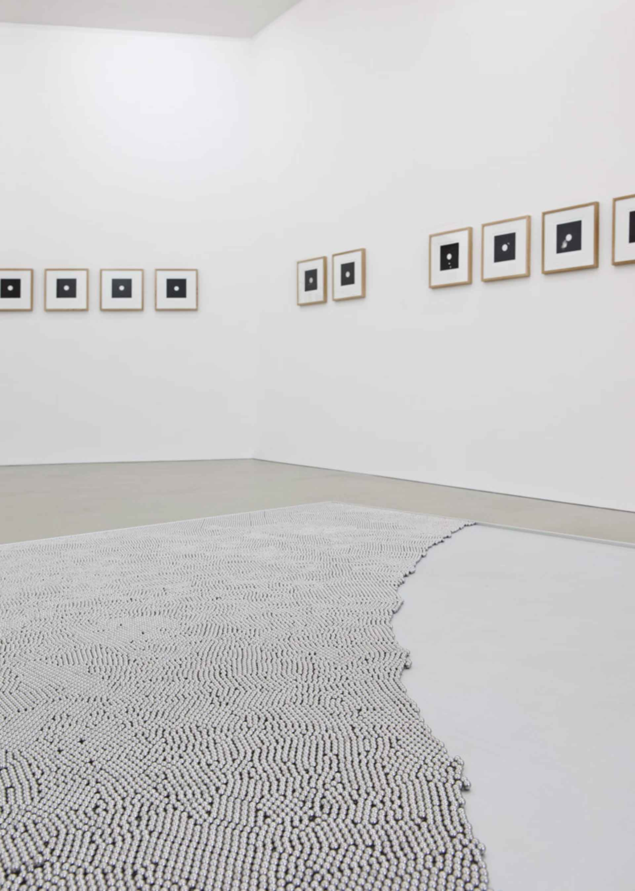
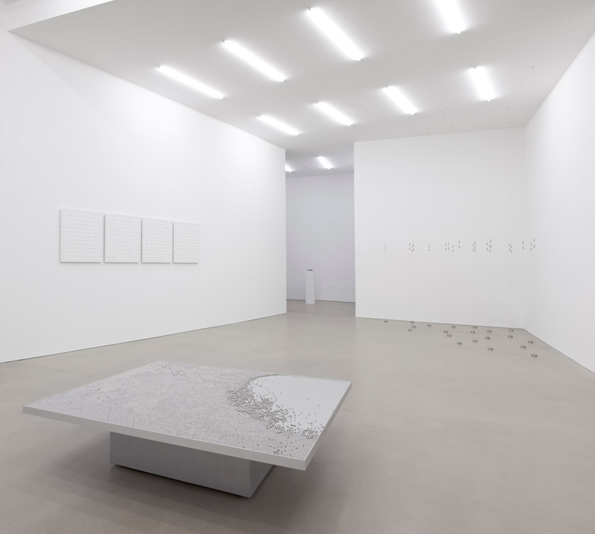

Berlin
2013
Spring Field
Coil springs, solenoids, control unit, electric leads, attachments
Approx. 400 x 300 x 300 cm, height variable
A total of 50 long coil springs are stretched vertically between the floor and ceiling in an 8 x 8 grid. On
the floor next to each coil spring is a solenoid. An 8 x 8 grid made of brass wire was stretched along the
floor, in line with the grid of coil springs. The brass wires are connected to a power supply via a control
unit. The wires stretched in one direction have a positive charge, while those stretched at right angles to
them have a negative charge. The control unit randomly momentarily turns on the electricity to one positive
wire and one negative wire at a time. If there is a solenoid where the two wires cross, it is turned on and
hits the coil spring, making it resonate. The springs continue to resonate for some time, keeping the whole
installation vibrating. The sharp clicking sounds made by the solenoids produce a random, but clear rhythm.
www.estherschipper.com/artists/40-gronlund-nisunen/works/8160-gronlund-nisunen-spring-field-2012/



Plane
Magnets, stainless steel weights, stainless steel wire, fixtures
20 elements, approx. 230 x 300 x 400 cm (height variable)
Powerful neodymium magnets are suspended by steel wires from the ceiling of the gallery space. Vertically
below each magnet is another one connected to the floor by a similar wire. The opposite poles of the two
magnets face each other, with an approximately two-centimeter gap between them. The magnetic pull is greater
than gravity.
The magnet pairs, which are all in the same height, create an invisible conceptual plane between them. This
motionless, apparently static work contains invisible tensions and forces, demonstrating elemental forces of
nature we generally take for granted but that govern every aspect of our existence on the planet.
www.estherschipper.com/artists/40-gronlund-nisunen/works/8162-gronlund-nisunen-plane-2013/

Unstable Matter / Flow of Matter
Steel balls, anodized aluminum, laminated wood, stainless steel, painted MDF, electric actuator, limit
switches, control unit, power source
35 x 140 x 140 cm
A horizontal plane is set on a much smaller base. Narrow edges prevent tens of thousands of small steel balls
from falling off the 140 x 140 cm surface of the horizontal section across which they keep moving. The light
grey metal structure stands at about 35 cm above the floor and continuously tilts very slightly but steadily.
The changing inclination would not be that noticeable, were it not for the movement of the balls. There are
not enough of them to entirely cover the horizontal plane so that about a fifth of the mat grey surface
underneath remains visible.
www.estherschipper.com/artists/40-gronlund-nisunen/works/18341-gronlund-nisunen-flow-of-matter-2012/


Jules Racine 1448201
Stainless steel, glass, clock movement, wooden shelf
Approx. 1.5 x 6 x 4 cm
The title refers to the name of the company producing the timepieces. The artists have removed the backing in
order to reveal the mechanism inside the watch. Employing relatively simple but sophisticated means, using
magnetism, electric currents, or simple gravitational forces, Tommi Grönlund and Petteri Nisunen create
quietly evocative and formally striking works.
www.estherschipper.com/artists/40-gronlund-nisunen/works/8172-gronlund-nisunen-jules-racine-1448201-2013/